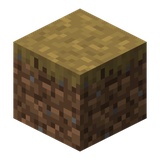

土径
minecraft:dirt_path
minecraft:dirt_path
Minecraft 原版物品。本站只收录 Create 模组的配方，所以这一页给的是「标签归属」和「哪些 Create 配方拿它当材料」。
属于这些标签 0
不属于任何已收录的标签。
被这些 Create 配方用到 0
本站收录的 Create 配方里没有直接用到它。

Minecraft 原版物品。本站只收录 Create 模组的配方，所以这一页给的是「标签归属」和「哪些 Create 配方拿它当材料」。
不属于任何已收录的标签。
本站收录的 Create 配方里没有直接用到它。